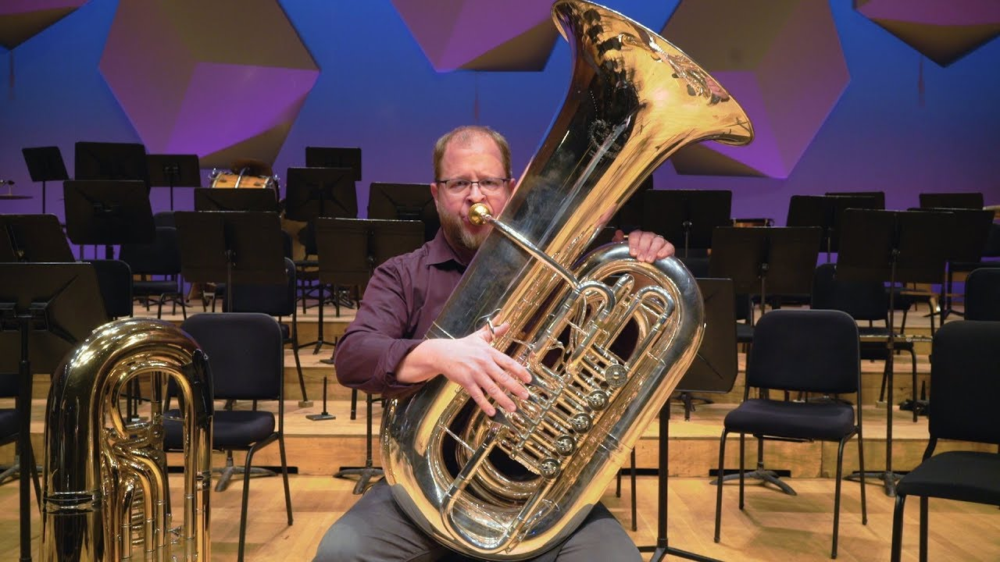

There are a large variety of tuba shapes and so defining a universal correct hand position is practically impossible. Thus, I’ll give a few pointers about the hand and leave it at that. First, make sure that the *right* hand is on the valves: some students will try using the left hand at first. Second, make sure that the wrist is straight and relaxed. This is purely to avoid strain and long-term injury. Third, make sure that the fingers on the valves are curved with the contact point being the tips of the fingers, not the pads. This prevents the valves from being pushed down at slightly odd angles and becoming damaged over time. Fourth, remind them to keep their fingers close to the valve even when it’s not depressed. This, along with the third pointer, gives more flexibility and control for the fast passages which they will play. . . eventually haha. They won’t have very many quick passages for a while, but it’s still beneficial to develop those habits EARLY.
What’s also crucial for young players is finding a way to get the mouthpiece to their face at a comfortable angle. You’ll often see shorter beginners struggling, arching their back and lifting their chin up to the sky, in order to reach the mouthpiece with their lips. You’ll also see taller players slouching down to reach the mouthpiece with their lips. Both prevent your players from being relaxed, or using their air properly. They prevent students from developing good embouchure, because they can’t experiment with different mouthpiece placements and angles. They cause strain, discomfort, and long term injury. It’s extremely important to figure out a proper holding position ASAP to avoid all of these problems.
Generally, tuba players have the tuba rest on the insides of their thighs, as pictured below. Start students here, tell them to sit up tall, and see where the mouthpiece is in relation to the face. Then, have them change the angle of their thighs to hold the tuba higher or lower, so that the mouthpiece is placed directly on their face (Usually angled slightly down. But while still sitting tall!). This will obviously feel different to a new tuba student, but should not be uncomfortable. This will work just fine for many students. Others will need to try other options.
The first option for very short tuba players is to have their legs angled out enough so that the tuba is actually resting on the corner of the chair. If the mouthpiece is still too high for them to comfortably reach, have them sit with books on their chair so that they are higher up compared to their tuba. Experiment with different books, or other objects to find something that works comfortably, and feels stable.
Another option is to actually purchase a tuba stand. Here is an example: tuba stand. Music shops sometimes carry these so students can try one out before purchasing it.
One other option is to simply rest the tuba on top of their thigh (either one depending, on the shape and size of the tuba/tuba player). If your taller tuba players are always slouching to reach the mouthpiece, this is a good option
Finally, as your tubas get comfortable holding the horn and producing a tone, experiment with the angle the mouthpiece is in relation to the face. This can be adjusted by leaning the tuba student and tuba slightly forwards and backwards. I and a lot of other tubas play better leaning more forwards, with the mouthpiece angled down, but students will vary. When you find a good position keep nagging them to move back to it because they will get lazy.